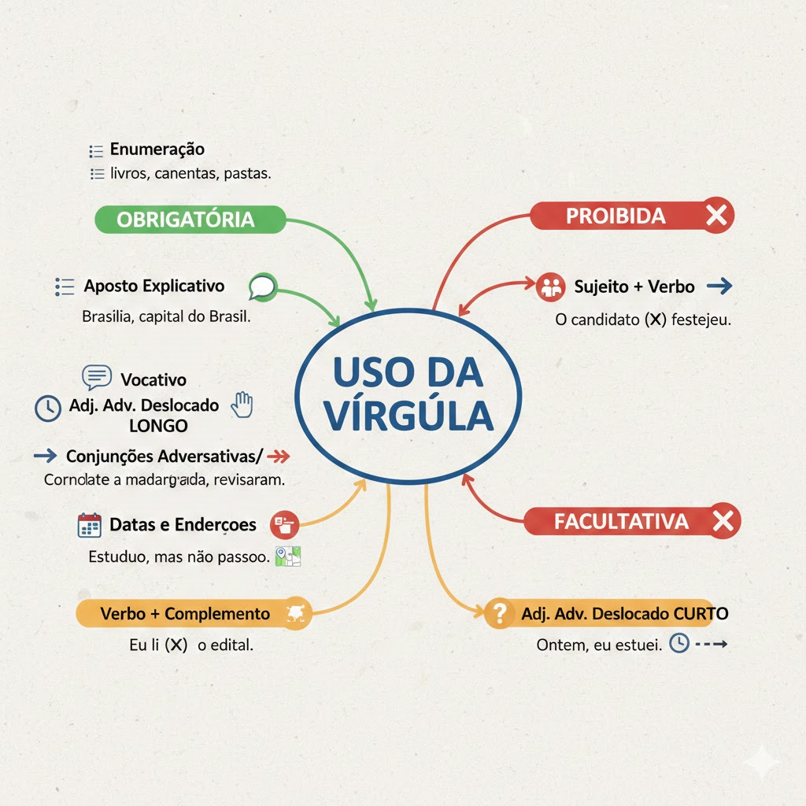

Virgula
Voltar
A vírgula é, sem dúvida, um dos temas mais cobrados em provas de Português.
O segredo não é "pausar para respirar", mas sim entender a estrutura da frase.
Aqui está um resumo estratégico para concursos:
- Quando a vírgula é OBRIGATÓRIA
- Enumerações:Para separar elementos com a mesma função.
- Ex: Comprei livros, canetas, pastas e borrachas.
- Aposto Explicativo:Quando você explica um termo anterior.
- Ex: Brasília, capital do Brasil, foi planejada.
- Vocativo:Quando você chama alguém (essencial em provas!).
- Ex: Alunos, estudem com dedicação.
- Adjunto Adverbial Deslocado (Longo):Quando uma indicação de tempo, lugar ou modo vem no início da frase.
- Ex: Durante a madrugada de ontem, os candidatos revisaram a matéria.
- Conjunções Adversativas e Conclusivas:Antes de mas, porém, contudo, todavia, logo, portanto.
- Ex: Estudou muito, mas não passou.
- Data e Endereços:Separar localidade e número.
- Ex: São Paulo, 15 de maio. Rua Direita, 100.
- Quando a vírgula é PROIBIDA (Onde as bancas tentam te enganar)
Existe uma regra de ouro: Não se separa os termos que estão ligados diretamente.
- Não separar Sujeito de Verbo:
- Errado: O candidato, aprovado no concurso festejou.
- Certo: O candidato aprovado no concurso festejou.
- Não separar Verbo de Complemento (Objeto):
- Errado: Eu li, o edital inteiro.
- Certo: Eu li o edital inteiro.
- A Vírgula Facultativa
Ocorre principalmente com Adjuntos Adverbiais Curtos (geralmente até 2 ou 3 palavras) que estão deslocados.
- Ex: Ontem, eu estudei. (OU) Ontem eu estudei. (Ambas estão corretas).
Resumo Visual para Memorizar
| Situação |
Regra |
Exemplo |
| Enumeração |
Obrigatória |
Fui à padaria, ao mercado e ao banco. |
| Vocativo |
Obrigatória |
João, venha aqui agora. |
| Sujeito + Verbo |
PROIBIDA |
Os alunos (X) estudam muito.. |
| Aposto |
Obrigatória |
Pelé, o rei do futebol, faleceu. |
